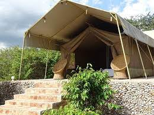
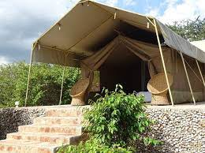

La réserve nationale du Masai Mara
C'est une réserve nationale située au sud-ouest du Kenya. Elle est le prolongement naturel du parc national du Serengeti situé en Tanzanie. Elle tient son nom de la tribu qui vit sur ses terres, les Masaïs, et de la rivière qui la traverse, la Mara. C'est dans ce parc qu'a été tourné le film Félins.C'est une région emblématique connue pour sa faune sauvage abondante et ses paysages spectaculaires.
Description
Explorez la majestueuse réserve de Maasai Mara au Kenya, un véritable joyau de la nature où la faune sauvage règne en maître.
Plongez dans un lieu où la nature et la culture se rencontrent pour créer une expérience unique.
Cette réserve emblématique est le théâtre de la grande migration annuelle des gnous et des zèbres, un spectacle époustouflant où des milliers d'animaux traversent les plaines à la recherche de pâturages frais.
Les guerriers Maasaï, gardiens de ces terres ancestrales, partagent leurs traditions et leur sagesse, ajoutant une dimension culturelle fascinante à cette réserve exceptionnelle.
Découvrez l'histoire riche et les merveilles naturelles de Maasai Mara, un endroit où le passé et le présent se rejoignent pour créer une expérience inoubliable.
Les vastes plaines herbeuses de Maasai Mara sont le foyer d'une incroyable diversité d'animaux sauvages, notamment les Big Five : lions, léopards, éléphants, buffles et rhinocéros. Les safaris dans la réserve offrent des opportunités uniques d'observer ces animaux majestueux dans leur habitat naturel, ainsi que d'autres espèces telles que les girafes, les zèbres, les hippopotames, les crocodiles, les guépards et une multitude d'oiseaux.
Outre sa faune impressionnante, la réserve de Maasai Mara offre des paysages spectaculaires, avec ses collines verdoyantes, ses rivières sinueuses comme la rivière Mara, ses acacias emblématiques et ses vastes étendues de savane dorée. Le paysage est particulièrement impressionnant lors de la grande migration annuelle des gnous et des zèbres, l'un des phénomènes naturels les plus remarquables au monde.

.jpg) 

.jpg)
Les lodges et camps de safari situés dans la réserve offrent aux visiteurs une expérience authentique de l'Afrique sauvage, avec des hébergements confortables et souvent luxueux, des repas délicieux, des safaris guidés passionnants et des activités culturelles avec les communautés locales Maasaï
Les campings, pour dormir sous une tente en pleine nature (dans des aires aménagées). C’est la formule la plus accessible, elle permet de vivre une expérience unique, mais sans profiter d’un confort optimal.
Les lodges, pour profiter de plus de confort. Ces hébergements disposent d’une salle de bain, d’une salle à manger et de chambres.
Les tentes safari (camps de toile), qui sont des versions plus luxueuses et confortables des campings, mais qui sont souvent les formules les plus chères. Dans ces grandes tentes, on trouve de vrais lits et il est possible sans problème de se tenir debout.
En plus de faire un safari au Masai Mara, vous pourrez également aller dans un authentique village Maasaï. Vous pourrez découvrir le mode de vie et la culture d’une richesse insoupçonnée du peuple Maasaï. Plusieurs villages sont situés sur le territoire de la réserve, et leurs habitants sont habitués à recevoir la visite de touristes. Il est également possible de faire un survol du Masai Mara en montgolfière. Depuis le ciel, vous pourrez découvrir un spectacle impressionnant, et voir ces immenses troupeaux se déplacer dans ces plaines immenses vous laissera forcément un souvenir inoubliable.